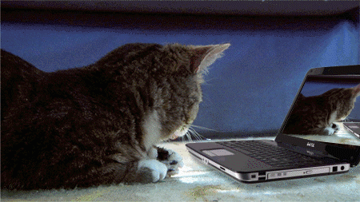
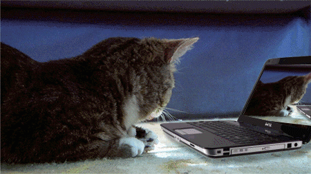
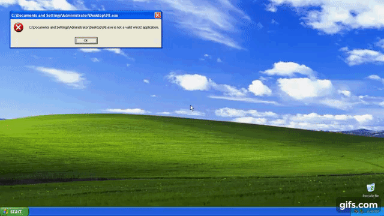
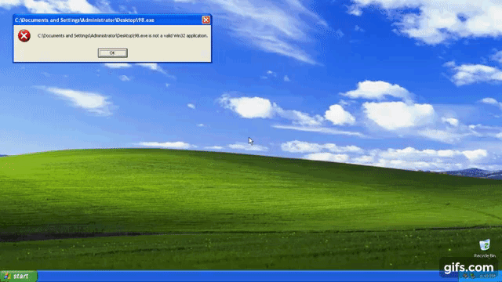

teamwork
Ik kan goed in teamverband werken maar werk bij voorkeur alleen. ik ben niet zo'n socializer en werk het liefst
alleen. zelfs als ik in een team werk, ga ik er liever meteen mee aan de slag en sla ik het praatje over. hoewel sommige
mensen kunnen heel leuk zijn om mee om te gaan, wat het veel leuker maakt. ik ben gewoon niet zo'n
mensen persoon. ik bedoel tenslotte. Ik ben een softwaredeveloper.
organisatie
Ik was vroeger nooit zo'n organisator, maar hoe meer ik in mezelf groeide, hoe meer ik leerde om meer te werken
structureel en goed overzicht houden op mijn werk. Ik raak soms zeker het spoor kwijt, afhankelijk van hoe het met me gaat
op dat moment wat een van mijn zwakke punten is, maar over het algemeen doe ik het goed. Als het op plannen aankomt, ben ik nog niet
tevreden vergeleken met waar ik wil zijn. maar hey, dit zou geen pagina met sterke en zwakke punten zijn zonder een
zwakheid.
werkhouding
Ik heb een hele goede werkhouding. Im werk zeer doelgericht zelfs voor kleine dingen. ik wil het graag zo snel
en efficiënt mogelijk gedaan hebben, zodat ik naar het volgende kan gaan. ik kan zeker worden vertraagd door mijn eigen
problemen . maar ik heb er veel vertrouwen in hoe hard en snel ik werk als ik in deze gemoedstoestand ben. Sinds
de meest productieve zijn en zoveel mogelijk streven uiteindelijk precies is wat ik wil doe ik mijn best om dat vol te houden
. Ik denk dat dit mijn sterkste eigenschap is, maar ik ben jong, dus ik maak nog steeds veel fouten.
Maar daarom ben ik niet van plan te vertragen.


 

 
